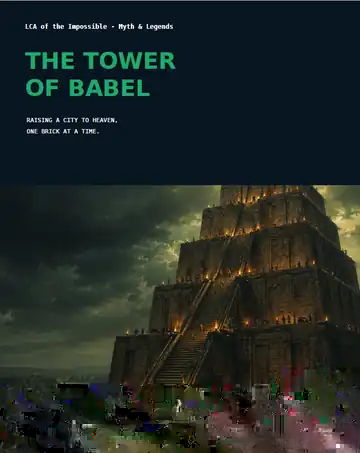
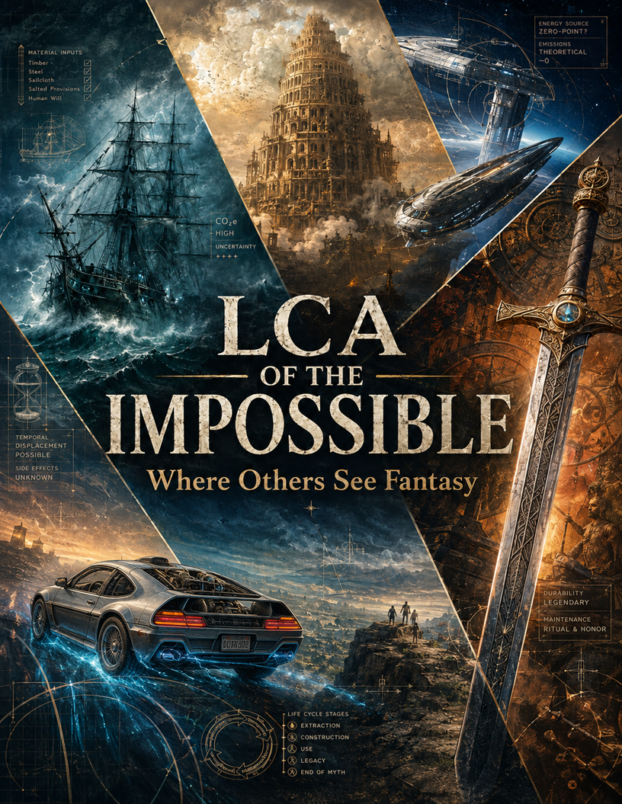

Choose the impossible
Ship, fortress, mythical object, giant structure, fictional machine or world.
LIFE CYCLE ASSESSMENT × MYTHS × FICTION × ENGINEERING
LCA of the Impossible is an ongoing series that applies life cycle thinking to impossible objects, legendary structures and fictional worlds — translating imagination into inventories, hotspots and carbon footprints.
ARCHIVE
Each episode now includes the modelling logic, inventory snapshot and result interpretation.

LATEST CASE
A 90-metre monument reconstructed as a completed form of Etemenanki, with fired-brick facing, bitumen mortar, imported timber, construction fires and one year of maintenance.
THE METHOD
Every episode starts with a fictional or legendary subject and treats it like an LCA problem: define a functional unit, reconstruct a plausible inventory, establish system boundaries, select the best available factors and calculate an interpretable result.
The goal is not to simulate certainty where none exists. The goal is to show how life cycle thinking works when data are imperfect, assumptions are explicit and storytelling helps carry technical meaning.
Ship, fortress, mythical object, giant structure, fictional machine or world.
Use analogies, historical sources, engineering logic and declared assumptions.
Translate the narrative object into materials, transport, operation and maintenance.
Identify the dominant contributor and explain why the footprint lands where it does.
THE SERIES
LinkedIn remains the publishing channel. This website is the evolving archive: a single place where each episode can live, be revisited and eventually connect to the wider project.
Over time, the archive can grow into a complete catalogue of episodes, downloadable carousels, source material, book references and future series expansions.

THE BOOK
A broader journey into the science, assumptions and impossible cases behind the series — with the audit trail left visible.